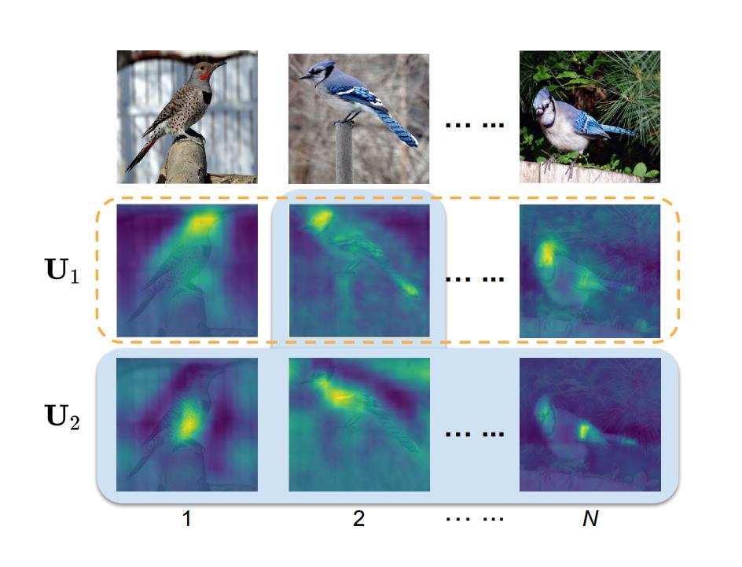

细粒度：Cross-X¶
综述¶
会议时间：IEEE International Conference on Computer Vision 2019 (ICCV, 2019)
源码地址(PyTorch版本)：https://github.com/cswluo/CrossX
针对领域：细粒度图像分类(FGVC)
主要思想¶
由于类内差异比较大并且类间相似度比较高，从具有细微差异的子类别中识别对象仍是一项具有挑战的任务。最近的工作中，以弱监督学习的识别方法大体思路都是先检测出物体的部件区域(part region)，之后提取相应特定于部件(part)的特征进行细粒度分类。然而这些方法通常孤立地处理每个图像特定于部件的特征，忽略了他们在不同图像之间的相关性，但实际上，不同图像之间的相关联系往往蕴含了一些对分类具有重要意义的语义信息。作者根据这个思想，提出了一种简单有效的Cross-X网络结构，通过探索不同图像以及不同网络层之间的联系来进行稳定的细粒度识别。
网络首先通过多激励模块(excitation modules)生成注意力区域特征(attention region features)，之后再让注意力区域特征经过两个模块：跨类别跨语义正则化器(cross-category cross-semantic regularizer, C3S)和跨层正则化器(cross-layer, CL)。C^3S用于引导不同激励模块产生的注意力特征去表示不同的语义部件。具体的来说，来自相同语义部件(物体的相同部位)的注意力特征应该比不同语义部件的特征更具有相关性，即使他们来自不同类别中的不同图像。因此C^3S通过如下方法来优化特征的学习：最大化相同激励模块得到的特征注意力之间的相关性，并且最小化不同激励模块得到的特征注意力之间的相关性。
同时，作者还探索了网络不同层之间的联系，来学习更稳定的多尺度注意力特征。首先利用FPN网络去生成综合特征(merged features)，综合特征可以让网络发现具有精细的空间分辨率以及丰富高级的语义信息的局部辨识力结构。为了进一步提高多尺度特征的鲁棒性，作者设计了跨层正则化器(CL)，用于匹配中层特征和高层特征的预测分布。
网络结构¶
Cross-X主要由两部分构成：①跨类别跨语义正则化器(C^3S)，通过利用不同图像之间的相关性来学习部件语义特征(semantic part features)；②跨层正则化器(CL)，通过匹配不同层之间的预测分布来学习鲁棒性特征(robust features)，网络结构图如下：
通过应用OSME模块来输出多个特征图，在主干特征提取网络最后两个阶段分别应用OSME模块，并且分别输出两个激励(excitation, 又叫特征注意力图)。L-1阶段的特征图(蓝色)与L阶段的特征图(红色)合并生成新的特征图(橙色)，左上角是合并的具体操作。之后，通过GAP或者GMP汇总，获得相应的池化特征。来自同一阶段的池化特征通过C^3S正则化器相互约束，并且同时被连接以传入全连接层来生成预测，之后利用CL正则化器来约束该预测，并将其组合用于分类。
OSME模块¶
作者引用了论文《Multi-attention multi-class constraint for fine-grained image recognition》(论文链接)中设计的OSME模块来为每张输入图像生成多个注意力特征区域。假设U=[u_1,\dots,u_C]\in R^{W\times H \times C}表示残差模块\tau输出的特征图，为了生成多个特征注意力图(attention-specific features)，OSME模块通过利用单压缩和多激励操作(one-squeeze and multiple-excitation operations)来扩展原始的残差模块。
首先利用全局平均池化去压缩特征图U并且生成一系列通道元素z=[z_1,\dots,z_C]\in R^C。之后，对每个激励模块分别在通道元素z上应用门控机制(gating mechanism)（即线性回归层），用p表示激励模块的数量，p=1,\dots,P：
C3S正则化器¶
作者提出了一种通过探索不同图片和不同激励之间特征图的相关性来学习语义特征。理想情况下，我们希望从相同的激励模块中提取的特征具有相同的语义信息，即使他们可能来自不同的图片，并且具有不同的类别标签，以及从不同的激励模块中提取的特征具有不同的语义信息，即使他们来自相同的图片(如下图)。为了实现这一目标，作者设计了交互类别交互语义正则化器，用于最大化相同激励模块之间的相关性，同时最小化不同激励模块之间的相关性。

以中间的图像为例，C^3S通过利用来自不同图像的特征(橙色虚线框)和来自不同激励模块的特征(蓝色阴影)之间的关系，鼓励激励模块U_1和U_2在不同语义上被激活。
具体的来说，首先利用全局平均池化(或者全局最大池化)操作压缩U_p，来得到对应的池化特征f_p\in R^C，之后再经过L2标准化运算(f_p\gets f_p/||f_p||)。然后利用下面的公式计算所有激励模块对(p和p')之间的相关性，从而形成相关性矩阵S：
C^3S正则化损失主要由两部分构成：①最大化S的主对角线元素，从而使同一激励模块内的相关性最大化；②惩罚S的范数，使不同激励模块之间的相关性最小：
CL正则化器¶
探索CNN中不同层之间的语义特征对很多视觉任务都有好处。在细粒度分类中，最简单的方法就是将不同层的预测输出组合起来进行最终的预测。然而作者在实验中观察到，这种简单的策略会导致较差的性能(模型识别精度不高)，假设该现象是由两个原因造成的：①中水平的特征对数据的输入非常敏感，由于细粒度图片具有较大的类内差异，同一类别中图片的信息量具有多变性，因此会降低模型的鲁棒性；②特征图预测之间的相关性没有被探索。为了解决这些问题，作者采用了特征金字塔网络(FPN，具体见论文《Feature Pyramid Networks for Object Detection》，论文链接)去合并不同层之间的特征数据，并且提出了一种新的跨层正则器(cross-layer regularizer, CL)，通过匹配不同层之间的预测分布，来学习鲁棒性特征。
具体的来说，假设U^L=\{U^L_p\}^P_{p=1}为第L阶段的特征图，U^{L-1}=\{U^{L-1}_p\}^P_{p=1}为第L-1阶段的特征图(这里的阶段表示产生大小相同特征图的一组网络层)。作者利用与FPN中类似的方法生成合并的特征图U^G_p，但相对原来的FPN，有如下两点不同：①U_p^L先进行降维，后进行上采样操作；②对合并后的特征图进行批量归一化操作(BN)，具体的过程可总结成如下公式：
为了进一步利用特征预测之间的联系，作者提出了CL正则化器，用于匹配不同层之间的预测分布。设Pr^L=\sigma(f(U^L))以及Pr^{L-1}=\sigma(f(U^{L-1}))分别为第L阶段和第L-1阶段的预测输出，其中\sigma(·)表示softmax激活函数，f(·)表示主干特征提取网络最后的输出层。CL正则化器通过最小化KL损失来鼓励Pr^{L-1}去匹配Pr^L：
损失优化¶
网络最终得到三组特征图U^L，U^{L-1}和U^G，网络最终的预测可以通过结合这三组的预测得到：
实验¶
可视化分析¶
下图为激活图的叠加显示，(a)为原始图像，(b)为U_p^{L-1}，©为U^L_p，(d)为U_p^G，(e)为U_p^{L-1},U^L_p与U_p^G结合的激活图。(b)-(e)展示了响应层的两个激励模块的激活图。
上图分别展示了三个数据集中的可视化图像，从图中可以清楚地发现，(b)-(d)对应的列中，激活图覆盖了不同尺度下不同对象的相同部分。与激活图©U^L相比，高度激活的区域(b)U^{L-1}和(d)U^G分别具有相对较小的比例和突出的中心。激活图U^G可以进一步看作是激活图U^{L}从U^{L-1}的增强，这与FPN中精细空间的分辨率(L-1阶段)和丰富的高级语义特征(L阶段)的设计是一致的。GMP与GAP引起的差异也可以在(b)中观察得到，GMP会导致单个区域(前两行)的一致激活(激活部位比较集中)，GAP会导致多个区域(后四行)的分散激活(激活部位比较分散)。因此，在辨识力区域是局部(比较集中)的数据集中(如CUB)，通常在U^{L-1}阶段使用GMP代替GAP汇聚数据(其余阶段均用GAP)。
精度对比¶
CUB-200-2011
Stanford Cars
Aircraft
总结¶
作者提出了一种用于细粒度分类的Cross-X网络结构，通过探索不同图像、不同层特征之间的联系，来学习稳定的细粒度特征。通过围绕如下思想：相同语义部分的特征虽然来自不同类别的不同图像，但应该比不同语义部分的特征更相关，设计了C3S正则化器来优化网络语义特征的提取能力，并且设计了CL损失来让网络学习更稳定的特征，提高了鲁棒性。
注：以上仅是笔者的个人见解，若有错误，欢迎指正。
最后一次修改日期：2021年12月16日